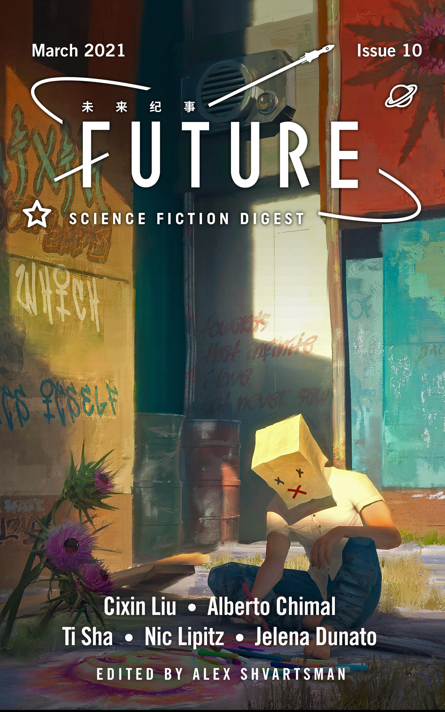

"The Final Test" /《毕业考试》 by Ti Sha / 提沙
Translated by Judith Huang (2021)
Our reading and meeting for May 2021 Sunday 6th June, 3pm BST, email for Zoom details
Story Summary
"! You realize that the test question is: “Prove that you have free will.”
You vaguely remember that the slogan associated with the phrase “free will” had an important historical significance, but that was at the beginning of the METÆlTitanic Era.
In modern contexts, this phrase is rarely mentioned.
After all, the words “free-(dom)” and “will” have long since been relegated to the
and have been abolished. You’ve only caught glimpses of them by chance, if they appeared to wash ashore as archaeological infofragments. But, unfortunately, being in VR, you can’t access ^[exogenous databases]."
- from The Final Test《毕业考试》 by Ti Sha / 提沙
Translated by Judith Huang (2021)
* * *
We're excited to host author Ti Sha at our next meeting in early June, to discuss his story The Final Test, translated by Judith Huang (2021). In this short science fiction piece, you are the protagonist. As you gain knowledge of what you are, you are also demanded by a lab-coated oppressive species to contend with who you could be. With the dominating question of whether free will is a genuine concept you can act on, the opposition being the cause and effect laws of physics, Ti Sha spins philosophy, humour and speculative evolutions of the mind and body in this playful narrative.
To conclude the English piece, writer and translator Judith Huang generously includes a brilliant note on her translation process and highlights specific ideas, like on what 'passing' means here, and the visual interpretation from the Chinese language into English with accents of code script styling. It is an insightful read that reinstates to us the depth of translation works.
* * *
You may find it in its English translation by Judith Huang here in issue 10 (March 2021) of Future Science Fiction Digest, which you can support
here. The original Chinese version is available
here.
Please read the story ahead of the session, and take the opportunity to chat with Ti Sha about its themes. If you don't get a chance to read the story until afterwards, do feel welcome to join nonetheless. As always, please respond to us by email and we'll send you the Zoom details a day prior the event.

The author
Ti Sha (提沙) has enjoyed reading SF & fantasy since he was young, which prompted him to become a PhD in theoretical physics. After playing with tiny particles e.g. quarks and gluons for a few years, he moved to Chicago and currently works as an alchemist using Python & C++. He also enjoys birding and finding wildlife in forests.
The translator
Judith Huang (錫影) is an Australian-based Singaporean multimedia creator, poet, author, sometime-journalist, failed-academic, translator, composer, musician, educator, serial-arts-collective-founder, Web 1.0 entrepreneur and aspiring-VR-creator. Her first novel, Sofia and the Utopia Machine, was shortlisted for the EBFP 2017 and Singapore Book Awards 2019. Judith counts bunny-minding, human-systems-hacking, Harvard-alumni-interviewing, hackerspace-running, truth-telling and propaganda-dissemination as her hobbies.
judithhuang.com